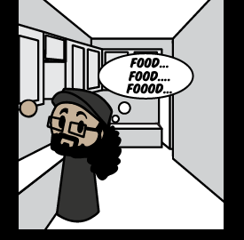

Joe
ConfirmedHost · Inventor · Bad idea accelerator
- Has the four-room apartment that becomes the group’s accidental refuge.
- Created K1 through K9; an old joke in K9’s code made the ninth unit the “Champion of the AI Quickening.”
- Builds things involving DNA, shrink rays, scanners, and consequences that usually reach kaiju scale.